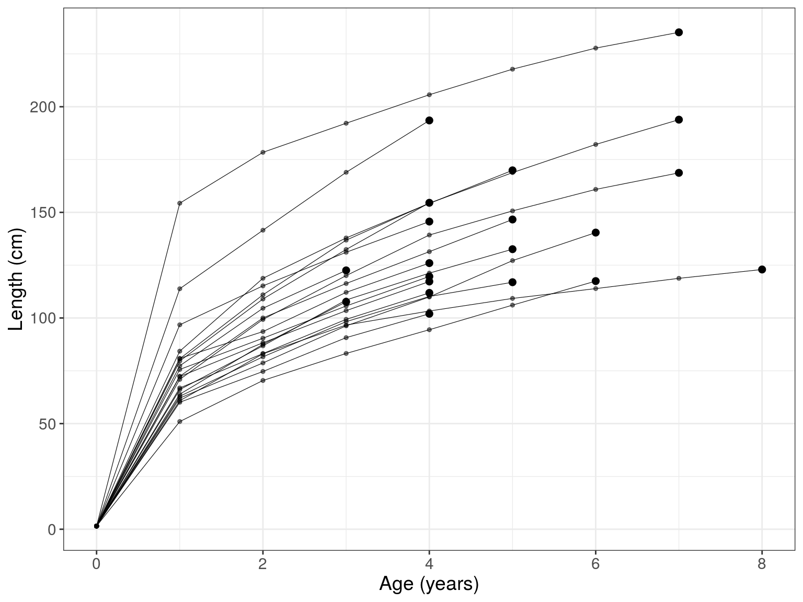
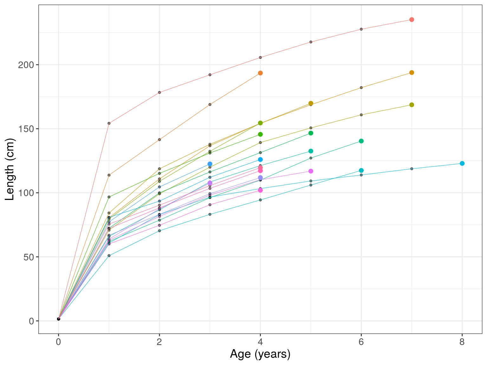
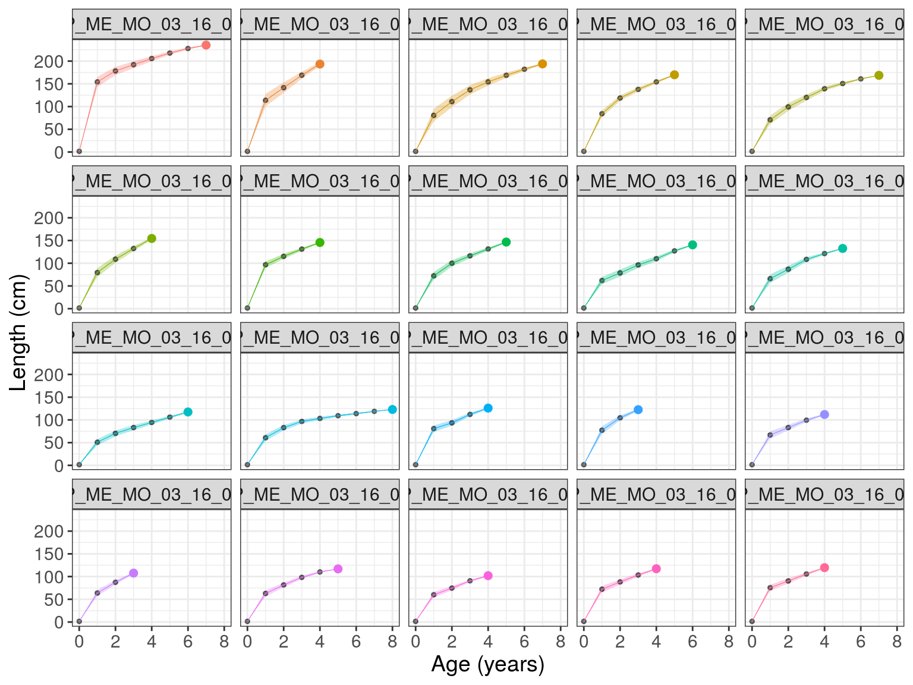
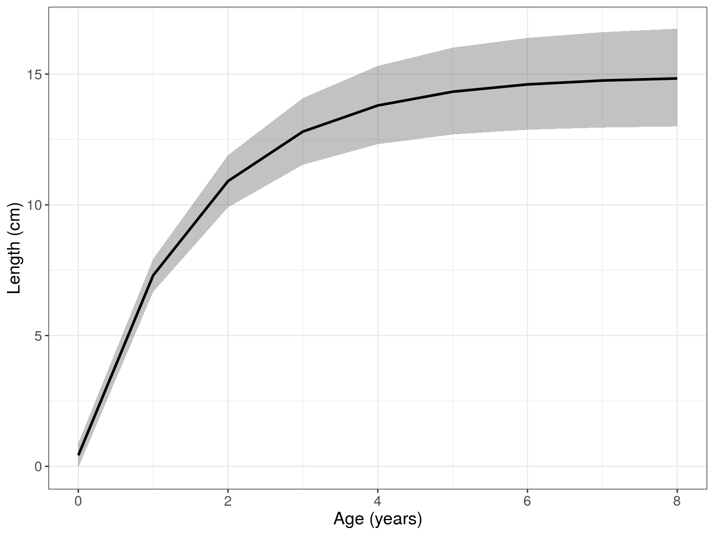
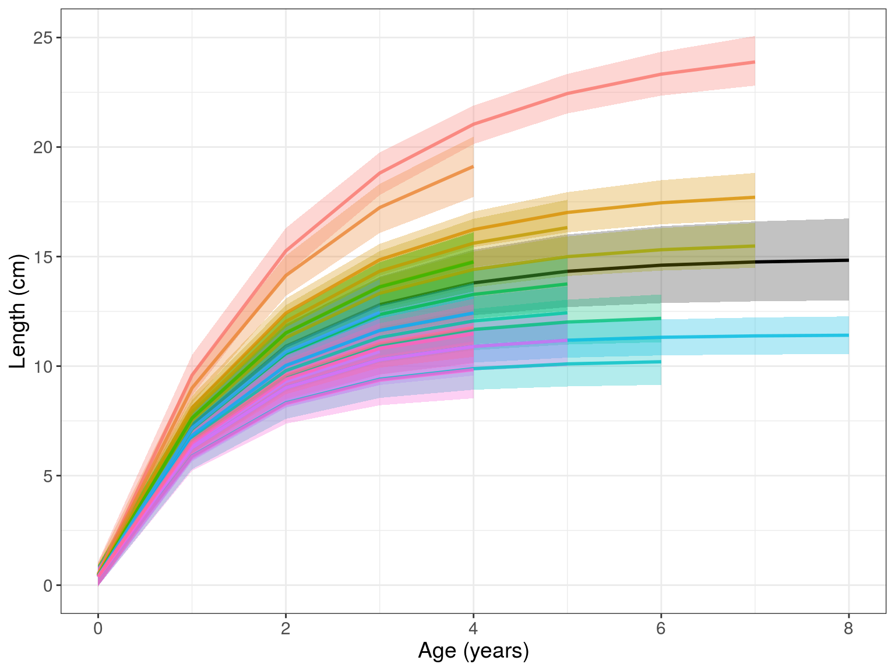
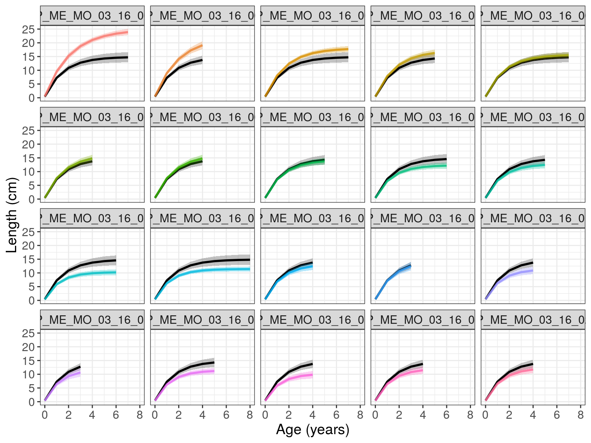

introduction.RmdIn this vignette, we provide an introduction to fishgrowbot through a case study. For theoretical background of the methodology, see Morat et al. (2020)
First things first: we need to load some packages.
library(fishgrowbot) library(dplyr) #> #> Attaching package: 'dplyr' #> The following objects are masked from 'package:stats': #> #> filter, lag #> The following objects are masked from 'package:base': #> #> intersect, setdiff, setequal, union
To introduce the functionalities of fishgrowbot, we look at an example for Epinephelus merra. The function bcalc() returns both a dataframe with the back-calculated lengths and their uncertainty and the model object for more details on the fit of the bc stan model.
The input data should contain:
# get data em <- dplyr::filter(fishgrowbot::coral_reef_fishes_data, species == "Epinephelus merra", location == "Moorea") # back-calculation bc <- fishgrowbot::bcalc(data = em) #> #> SAMPLING FOR MODEL 'stan_bcalc' NOW (CHAIN 1). #> Chain 1: #> Chain 1: Gradient evaluation took 2.9e-05 seconds #> Chain 1: 1000 transitions using 10 leapfrog steps per transition would take 0.29 seconds. #> Chain 1: Adjust your expectations accordingly! #> Chain 1: #> Chain 1: #> Chain 1: Iteration: 1 / 2000 [ 0%] (Warmup) #> Chain 1: Iteration: 200 / 2000 [ 10%] (Warmup) #> Chain 1: Iteration: 400 / 2000 [ 20%] (Warmup) #> Chain 1: Iteration: 600 / 2000 [ 30%] (Warmup) #> Chain 1: Iteration: 800 / 2000 [ 40%] (Warmup) #> Chain 1: Iteration: 1000 / 2000 [ 50%] (Warmup) #> Chain 1: Iteration: 1001 / 2000 [ 50%] (Sampling) #> Chain 1: Iteration: 1200 / 2000 [ 60%] (Sampling) #> Chain 1: Iteration: 1400 / 2000 [ 70%] (Sampling) #> Chain 1: Iteration: 1600 / 2000 [ 80%] (Sampling) #> Chain 1: Iteration: 1800 / 2000 [ 90%] (Sampling) #> Chain 1: Iteration: 2000 / 2000 [100%] (Sampling) #> Chain 1: #> Chain 1: Elapsed Time: 0.593851 seconds (Warm-up) #> Chain 1: 0.199082 seconds (Sampling) #> Chain 1: 0.792933 seconds (Total) #> Chain 1: #> #> SAMPLING FOR MODEL 'stan_bcalc' NOW (CHAIN 2). #> Chain 2: #> Chain 2: Gradient evaluation took 2.1e-05 seconds #> Chain 2: 1000 transitions using 10 leapfrog steps per transition would take 0.21 seconds. #> Chain 2: Adjust your expectations accordingly! #> Chain 2: #> Chain 2: #> Chain 2: Iteration: 1 / 2000 [ 0%] (Warmup) #> Chain 2: Iteration: 200 / 2000 [ 10%] (Warmup) #> Chain 2: Iteration: 400 / 2000 [ 20%] (Warmup) #> Chain 2: Iteration: 600 / 2000 [ 30%] (Warmup) #> Chain 2: Iteration: 800 / 2000 [ 40%] (Warmup) #> Chain 2: Iteration: 1000 / 2000 [ 50%] (Warmup) #> Chain 2: Iteration: 1001 / 2000 [ 50%] (Sampling) #> Chain 2: Iteration: 1200 / 2000 [ 60%] (Sampling) #> Chain 2: Iteration: 1400 / 2000 [ 70%] (Sampling) #> Chain 2: Iteration: 1600 / 2000 [ 80%] (Sampling) #> Chain 2: Iteration: 1800 / 2000 [ 90%] (Sampling) #> Chain 2: Iteration: 2000 / 2000 [100%] (Sampling) #> Chain 2: #> Chain 2: Elapsed Time: 0.602419 seconds (Warm-up) #> Chain 2: 0.205157 seconds (Sampling) #> Chain 2: 0.807576 seconds (Total) #> Chain 2: #> #> SAMPLING FOR MODEL 'stan_bcalc' NOW (CHAIN 3). #> Chain 3: #> Chain 3: Gradient evaluation took 2.1e-05 seconds #> Chain 3: 1000 transitions using 10 leapfrog steps per transition would take 0.21 seconds. #> Chain 3: Adjust your expectations accordingly! #> Chain 3: #> Chain 3: #> Chain 3: Iteration: 1 / 2000 [ 0%] (Warmup) #> Chain 3: Iteration: 200 / 2000 [ 10%] (Warmup) #> Chain 3: Iteration: 400 / 2000 [ 20%] (Warmup) #> Chain 3: Iteration: 600 / 2000 [ 30%] (Warmup) #> Chain 3: Iteration: 800 / 2000 [ 40%] (Warmup) #> Chain 3: Iteration: 1000 / 2000 [ 50%] (Warmup) #> Chain 3: Iteration: 1001 / 2000 [ 50%] (Sampling) #> Chain 3: Iteration: 1200 / 2000 [ 60%] (Sampling) #> Chain 3: Iteration: 1400 / 2000 [ 70%] (Sampling) #> Chain 3: Iteration: 1600 / 2000 [ 80%] (Sampling) #> Chain 3: Iteration: 1800 / 2000 [ 90%] (Sampling) #> Chain 3: Iteration: 2000 / 2000 [100%] (Sampling) #> Chain 3: #> Chain 3: Elapsed Time: 0.649345 seconds (Warm-up) #> Chain 3: 0.220047 seconds (Sampling) #> Chain 3: 0.869392 seconds (Total) #> Chain 3: #> #> SAMPLING FOR MODEL 'stan_bcalc' NOW (CHAIN 4). #> Chain 4: #> Chain 4: Gradient evaluation took 1.9e-05 seconds #> Chain 4: 1000 transitions using 10 leapfrog steps per transition would take 0.19 seconds. #> Chain 4: Adjust your expectations accordingly! #> Chain 4: #> Chain 4: #> Chain 4: Iteration: 1 / 2000 [ 0%] (Warmup) #> Chain 4: Iteration: 200 / 2000 [ 10%] (Warmup) #> Chain 4: Iteration: 400 / 2000 [ 20%] (Warmup) #> Chain 4: Iteration: 600 / 2000 [ 30%] (Warmup) #> Chain 4: Iteration: 800 / 2000 [ 40%] (Warmup) #> Chain 4: Iteration: 1000 / 2000 [ 50%] (Warmup) #> Chain 4: Iteration: 1001 / 2000 [ 50%] (Sampling) #> Chain 4: Iteration: 1200 / 2000 [ 60%] (Sampling) #> Chain 4: Iteration: 1400 / 2000 [ 70%] (Sampling) #> Chain 4: Iteration: 1600 / 2000 [ 80%] (Sampling) #> Chain 4: Iteration: 1800 / 2000 [ 90%] (Sampling) #> Chain 4: Iteration: 2000 / 2000 [100%] (Sampling) #> Chain 4: #> Chain 4: Elapsed Time: 0.615912 seconds (Warm-up) #> Chain 4: 0.21303 seconds (Sampling) #> Chain 4: 0.828942 seconds (Total) #> Chain 4: head(bc$lengths) #> id age l_m l_sd l_lb l_ub #> 1 EP_ME_MO_03_16_001 0 1.5000 1.106836e-15 1.5000 1.5000 #> 2 EP_ME_MO_03_16_001 1 154.2374 5.824272e+00 142.7073 165.6213 #> 3 EP_ME_MO_03_16_001 2 178.3450 4.608571e+00 169.1444 187.2760 #> 4 EP_ME_MO_03_16_001 3 192.1223 3.774772e+00 184.5537 199.4047 #> 5 EP_ME_MO_03_16_001 4 205.6329 2.867389e+00 199.8611 211.1418 #> 6 EP_ME_MO_03_16_001 5 217.7434 1.983167e+00 213.7383 221.5400
The function bcplot helps visualize the back calculation. Some examples:
bcplot(bc$lengths)

bcplot(bc$lengths, colorid = TRUE)

bcplot(bc$lengths, colorid = TRUE, facet = TRUE, error = TRUE)

Then, we can fit the hierarchical Von Bertalanffy growthmodel that allows for the estimation of multiple parameters. Importantly, length measures should be given in cm.
# fit growth model growthmodel <- fishgrowbot::growthreg(length = bc$lengths$l_m/10, age = bc$lengths$age, id = bc$lengths$id, lmax = 32, linf_m = 28, linf_sd = 5, l0_m = 0.15, l0_sd = 0.015, iter = 4000, open_progress = FALSE, plot = FALSE) #> #> SAMPLING FOR MODEL 'vonbert' NOW (CHAIN 1). #> Chain 1: Rejecting initial value: #> Chain 1: Error evaluating the log probability at the initial value. #> Chain 1: Exception: normal_lpdf: Location parameter[95] is -nan, but must be finite! (in 'model_vonbert' at line 61) #> #> Chain 1: #> Chain 1: Gradient evaluation took 7e-05 seconds #> Chain 1: 1000 transitions using 10 leapfrog steps per transition would take 0.7 seconds. #> Chain 1: Adjust your expectations accordingly! #> Chain 1: #> Chain 1: #> Chain 1: Iteration: 1 / 4000 [ 0%] (Warmup) #> Chain 1: Iteration: 400 / 4000 [ 10%] (Warmup) #> Chain 1: Iteration: 800 / 4000 [ 20%] (Warmup) #> Chain 1: Iteration: 1200 / 4000 [ 30%] (Warmup) #> Chain 1: Iteration: 1600 / 4000 [ 40%] (Warmup) #> Chain 1: Iteration: 2000 / 4000 [ 50%] (Warmup) #> Chain 1: Iteration: 2001 / 4000 [ 50%] (Sampling) #> Chain 1: Iteration: 2400 / 4000 [ 60%] (Sampling) #> Chain 1: Iteration: 2800 / 4000 [ 70%] (Sampling) #> Chain 1: Iteration: 3200 / 4000 [ 80%] (Sampling) #> Chain 1: Iteration: 3600 / 4000 [ 90%] (Sampling) #> Chain 1: Iteration: 4000 / 4000 [100%] (Sampling) #> Chain 1: #> Chain 1: Elapsed Time: 7.05975 seconds (Warm-up) #> Chain 1: 8.7846 seconds (Sampling) #> Chain 1: 15.8444 seconds (Total) #> Chain 1: #> #> SAMPLING FOR MODEL 'vonbert' NOW (CHAIN 2). #> Chain 2: #> Chain 2: Gradient evaluation took 4.6e-05 seconds #> Chain 2: 1000 transitions using 10 leapfrog steps per transition would take 0.46 seconds. #> Chain 2: Adjust your expectations accordingly! #> Chain 2: #> Chain 2: #> Chain 2: Iteration: 1 / 4000 [ 0%] (Warmup) #> Chain 2: Iteration: 400 / 4000 [ 10%] (Warmup) #> Chain 2: Iteration: 800 / 4000 [ 20%] (Warmup) #> Chain 2: Iteration: 1200 / 4000 [ 30%] (Warmup) #> Chain 2: Iteration: 1600 / 4000 [ 40%] (Warmup) #> Chain 2: Iteration: 2000 / 4000 [ 50%] (Warmup) #> Chain 2: Iteration: 2001 / 4000 [ 50%] (Sampling) #> Chain 2: Iteration: 2400 / 4000 [ 60%] (Sampling) #> Chain 2: Iteration: 2800 / 4000 [ 70%] (Sampling) #> Chain 2: Iteration: 3200 / 4000 [ 80%] (Sampling) #> Chain 2: Iteration: 3600 / 4000 [ 90%] (Sampling) #> Chain 2: Iteration: 4000 / 4000 [100%] (Sampling) #> Chain 2: #> Chain 2: Elapsed Time: 6.41572 seconds (Warm-up) #> Chain 2: 7.91512 seconds (Sampling) #> Chain 2: 14.3308 seconds (Total) #> Chain 2: #> #> SAMPLING FOR MODEL 'vonbert' NOW (CHAIN 3). #> Chain 3: #> Chain 3: Gradient evaluation took 5.5e-05 seconds #> Chain 3: 1000 transitions using 10 leapfrog steps per transition would take 0.55 seconds. #> Chain 3: Adjust your expectations accordingly! #> Chain 3: #> Chain 3: #> Chain 3: Iteration: 1 / 4000 [ 0%] (Warmup) #> Chain 3: Iteration: 400 / 4000 [ 10%] (Warmup) #> Chain 3: Iteration: 800 / 4000 [ 20%] (Warmup) #> Chain 3: Iteration: 1200 / 4000 [ 30%] (Warmup) #> Chain 3: Iteration: 1600 / 4000 [ 40%] (Warmup) #> Chain 3: Iteration: 2000 / 4000 [ 50%] (Warmup) #> Chain 3: Iteration: 2001 / 4000 [ 50%] (Sampling) #> Chain 3: Iteration: 2400 / 4000 [ 60%] (Sampling) #> Chain 3: Iteration: 2800 / 4000 [ 70%] (Sampling) #> Chain 3: Iteration: 3200 / 4000 [ 80%] (Sampling) #> Chain 3: Iteration: 3600 / 4000 [ 90%] (Sampling) #> Chain 3: Iteration: 4000 / 4000 [100%] (Sampling) #> Chain 3: #> Chain 3: Elapsed Time: 7.50648 seconds (Warm-up) #> Chain 3: 8.06259 seconds (Sampling) #> Chain 3: 15.5691 seconds (Total) #> Chain 3: #> #> SAMPLING FOR MODEL 'vonbert' NOW (CHAIN 4). #> Chain 4: #> Chain 4: Gradient evaluation took 4.8e-05 seconds #> Chain 4: 1000 transitions using 10 leapfrog steps per transition would take 0.48 seconds. #> Chain 4: Adjust your expectations accordingly! #> Chain 4: #> Chain 4: #> Chain 4: Iteration: 1 / 4000 [ 0%] (Warmup) #> Chain 4: Iteration: 400 / 4000 [ 10%] (Warmup) #> Chain 4: Iteration: 800 / 4000 [ 20%] (Warmup) #> Chain 4: Iteration: 1200 / 4000 [ 30%] (Warmup) #> Chain 4: Iteration: 1600 / 4000 [ 40%] (Warmup) #> Chain 4: Iteration: 2000 / 4000 [ 50%] (Warmup) #> Chain 4: Iteration: 2001 / 4000 [ 50%] (Sampling) #> Chain 4: Iteration: 2400 / 4000 [ 60%] (Sampling) #> Chain 4: Iteration: 2800 / 4000 [ 70%] (Sampling) #> Chain 4: Iteration: 3200 / 4000 [ 80%] (Sampling) #> Chain 4: Iteration: 3600 / 4000 [ 90%] (Sampling) #> Chain 4: Iteration: 4000 / 4000 [100%] (Sampling) #> Chain 4: #> Chain 4: Elapsed Time: 8.32479 seconds (Warm-up) #> Chain 4: 8.2695 seconds (Sampling) #> Chain 4: 16.5943 seconds (Total) #> Chain 4: # summary growth parameters growthmodel$summary #> mean se_mean sd 2.5% 25% 50% #> k 0.64595595 0.0013114834 0.05393331 0.54844945 0.60894335 0.64181969 #> linf 14.87640957 0.0388704257 1.02470164 12.93504963 14.21172492 14.81767425 #> l0 0.42813725 0.0034076302 0.23549621 -0.04083371 0.27172665 0.42920738 #> t0 -0.04636897 0.0003853312 0.02666492 -0.10110702 -0.06359022 -0.04553334 #> kmax 0.39715874 0.0008669057 0.04079098 0.32450393 0.36811504 0.39501108 #> 75% 97.5% #> k 0.68010234 0.761104145 #> linf 15.51173865 17.028618629 #> l0 0.58461858 0.889343847 #> t0 -0.02827619 0.004018477 #> kmax 0.42344261 0.482676895
Now we can visualize the fit with the function gmplot().
gmplot(growthmodel)

Setting id to TRUE, we can see the individual growth curves.
gmplot(growthmodel, id = TRUE)

If there are many individuals, the id graph can quickly get crowded. Set facet = TRUE to have a subplot per individual.
gmplot(growthmodel, id = TRUE, facet = TRUE)
